K线来自日本，日语是罫(kei)线(senn)，取首字母即"K线"。它还有一个名字叫做「日本蜡烛图」，是不是很形象呢。
在微云九州的首页，有15分钟k线和30分钟k线60分钟K线，这里面包含了市场波动的秘密。那么，该如何解读呢？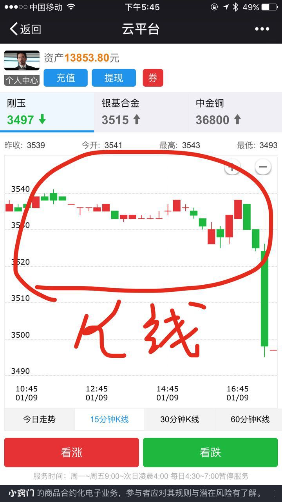
K线是根据市价一定时间的走势中形成的四个价位即：开盘价,收盘价,最高价,最低价绘制而成的.
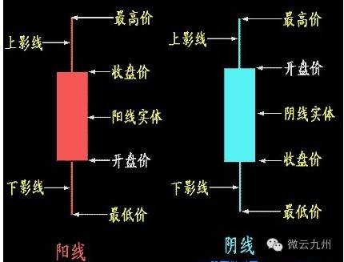
1.收盘价高于开盘价时,则开盘价在下收盘价在上,二者之间的长方柱用红色或空心绘出,称之为阳线；其上影线的最高点为最高价,下影线的最低点为最低价.
2.收盘价低于开盘价时,则开盘价在上收盘价在下,二者之间的长方柱用黑色或实心绘出,称之为阴线,其上影线的最高点为最高价,下影线的最低点为最低价.
3.根据开盘价与收盘价的波动范围,可将Ｋ线分为极阴、极阳,小阴、小阳,中阴中阳和大阴、大阳等线型.它们一般的波动范围
极阴线和极阳线的波动范围在0.5%左右；
小阴线和小阳线的波动范围一般在0.6--1.5%；
中阴线和中阳线的波动范围一般在1.6-3.5%；
大阴线和大阳线的波动范围在3.6%以上.
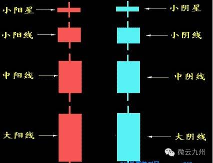
A.小阳星:
全日中股价波动很小，开盘价与收盘价极其接近，收盘价略高于开盘价。小阳星的出现，表明行情正处于混乱不明的阶段，后市的涨跌无法预测，此时要根据其前期Ｋ线组合的形状以及当时所处的价位区域综合判断。
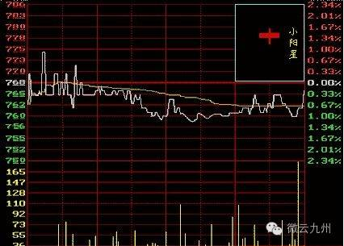
B.小阴星:
小阴星的分时走势图与小阳星相似，只是收盘价格略低于开盘价格。表明行情疲软，发展方向不明。
C.小阳线:
其波动范围较小阳星增大，多头稍占上风，但上攻乏力，表明行情发展扑朔迷离。
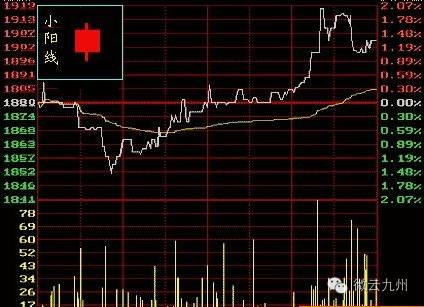
D.上吊阳线:
如果在低价位区域出现上吊阳线，股价表现出探底过程中成交量萎缩，随着股价的逐步攀高，成交量呈均匀放大事态，并最终以阳线报收，预示后市股价看涨。
如果在高价位区域出现上吊阳线，股价走出如图所示的形态，则有可能是主力在拉高出货，需要留心。
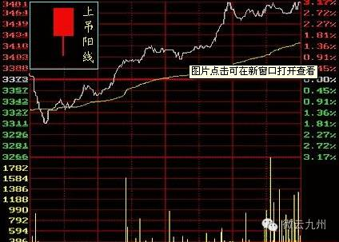
E.下影阳线:
表明多空交战中多方的攻击沉稳有力，股价先跌后涨，行情有进一步上涨的潜力。
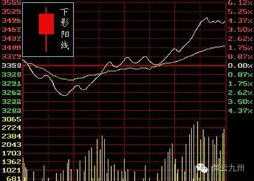
F.上影阳线:
显示多方攻击时上方抛压沉重。这种图形常见于主力的试盘动作，说明此时浮动筹码较多，涨势不强。
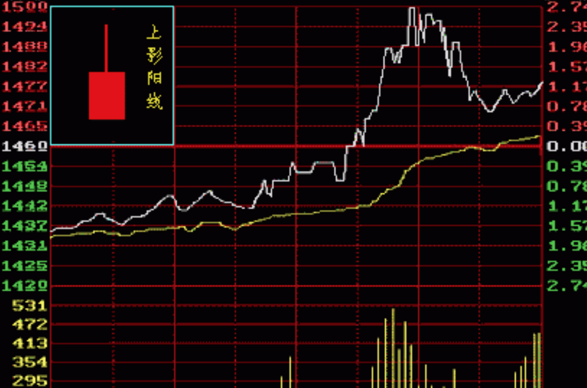
G.穿头破脚阳线:
股价走出如图所示的图形说明多方已占据优势，并出现逐波上攻行情，股价在成交量的配合下稳步升高，预示后市看涨。
同样为穿头破脚阳线，股价走势若表现出在全日多数时间内横盘或者盘跌而尾市突然拉高时，预示次日可能跳空高开后低走。
还有一种情况，股价走势若表现为全日宽幅振荡尾市放量拉升收阳时，可能是当日主力通过振荡洗盘驱赶坐轿客，然后轻松拉高，后市可能继续看涨。
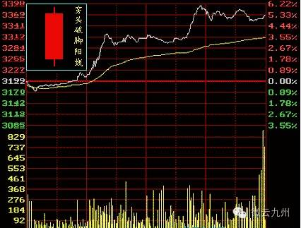
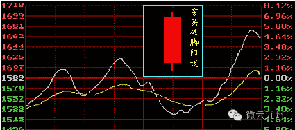
H.光头阳线:
光头阳线若出现在低价位区域，在分时走势图上表现为股价探底后逐浪走高且成交量同时放大，预示为一轮上升行情的开始。如果出现在上升行情途中，表明后市继续看好。
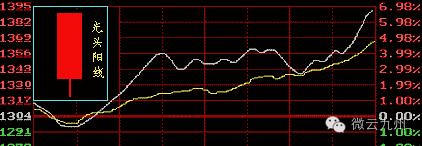
I.光脚阳线: 表示上升势头很强，但在高价位处多空双方有分歧，购买时应谨慎。
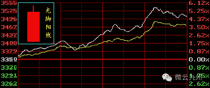
J.上影阳线:
表示多方上攻受阻回落，上挡抛盘较重。能否继续上升局势尚不明朗。
K.光头光脚阳线: 表明多方已经牢固控制盘面，逐浪上攻，步步逼空，涨势强烈。
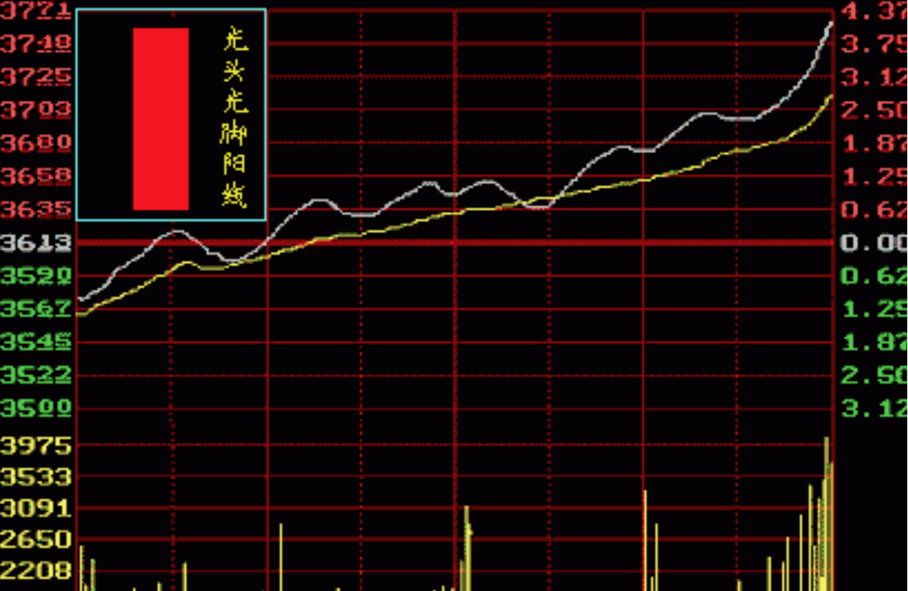
L.小阴线:
表示空方呈打压态势，但力度不大
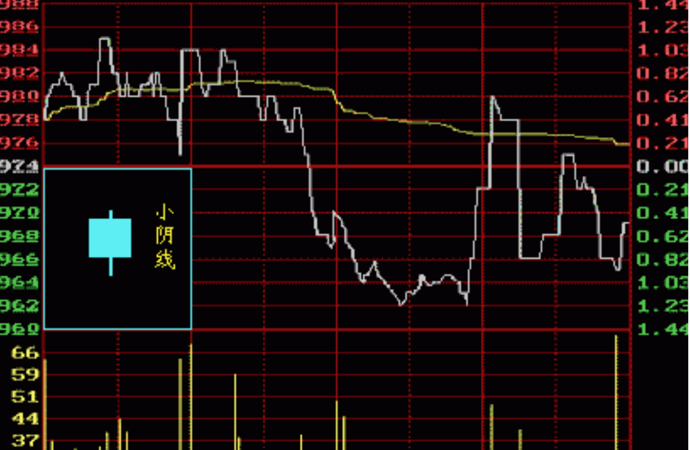
M.光脚阴线:
光脚阴线的出现表示股价虽有反弹，但上档抛压沉重。空方趁势打压使股价以阴线报收。
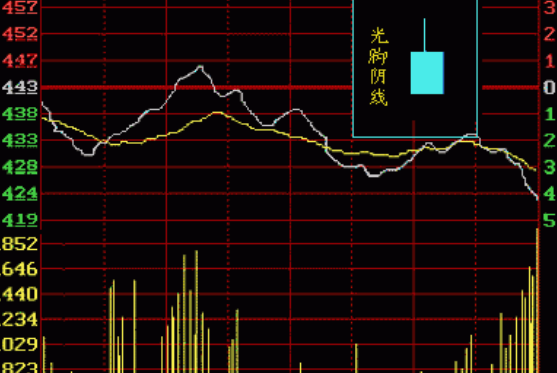
N.光头阴线:
如果这种线型出现于低价位区，说明抄低盘的介入使股价有反弹迹象，但力度不大。
O.下影阴线、下影十字星、T形线:
这三种线型中的任何一种出现在低价位区时，都说明下档承接力较强，股价有反弹的可能。
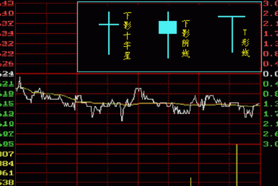
P.上影阴线、倒T形线:
这两种线型中的任何一种出现在高价位区时，说明上档抛压严重，行情疲软，股价有反转下跌的可能；如果出现在中价位区的上升途中，则表明后市仍有上升空间。
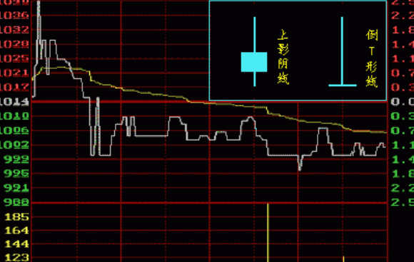
Q.十字星:
这种线型常称为变盘十字星，无论出现在高价位区或低价位区，都可视为顶部或底部信号，预示大势即将改变原来的走向。
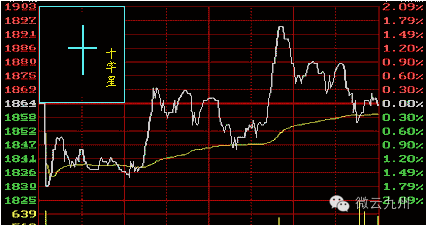
--------------------------------
相信当您掌握了k线图的秘密，一定会在市场上如虎添翼！